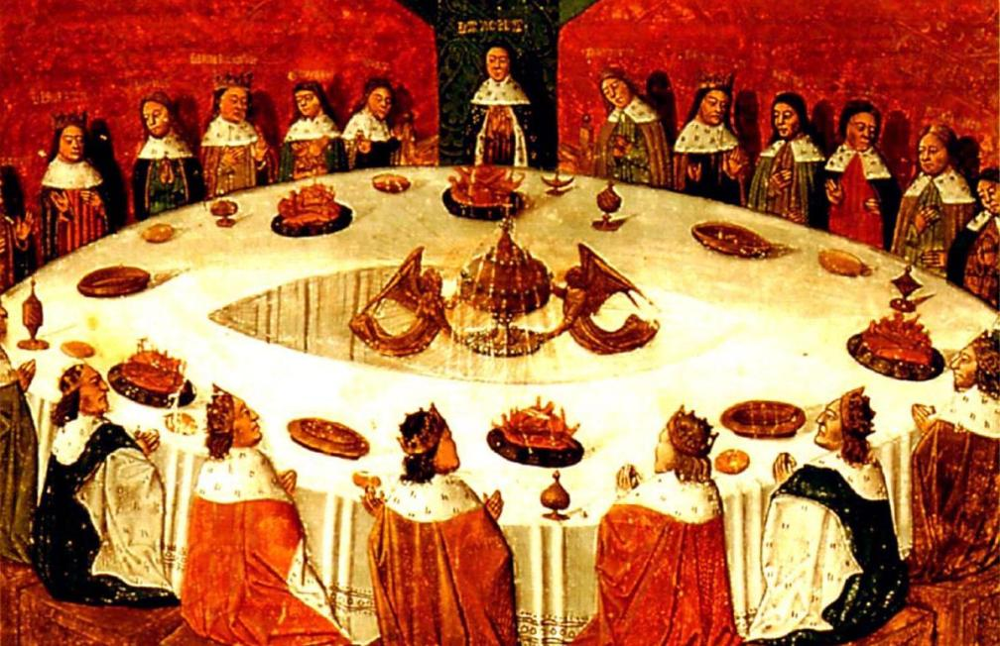

Welke verteltechniek die Chrétien de Troyes gebruikte, was zo revolutionair?
Voordat Chrétien de Troyes begon met het schrijven van zijn Arthurverhalen – wat later een internationaal fenomeen zou worden – waren heldenverhalen vooral geschreven met in de hoofdpersoon brute figuren en de schrijfstijl was enigszins luguber: het geweld werd allemaal tot in detail beschreven. Chrétien de Troyes schreef het echter met meer verfijndere ridders, zodat deze verhalen als moraal hadden hoe ridders zich hoorden te gedragen; de adel kon deze boeken lezen en een voorbeeld nemen aan de figuren erin.